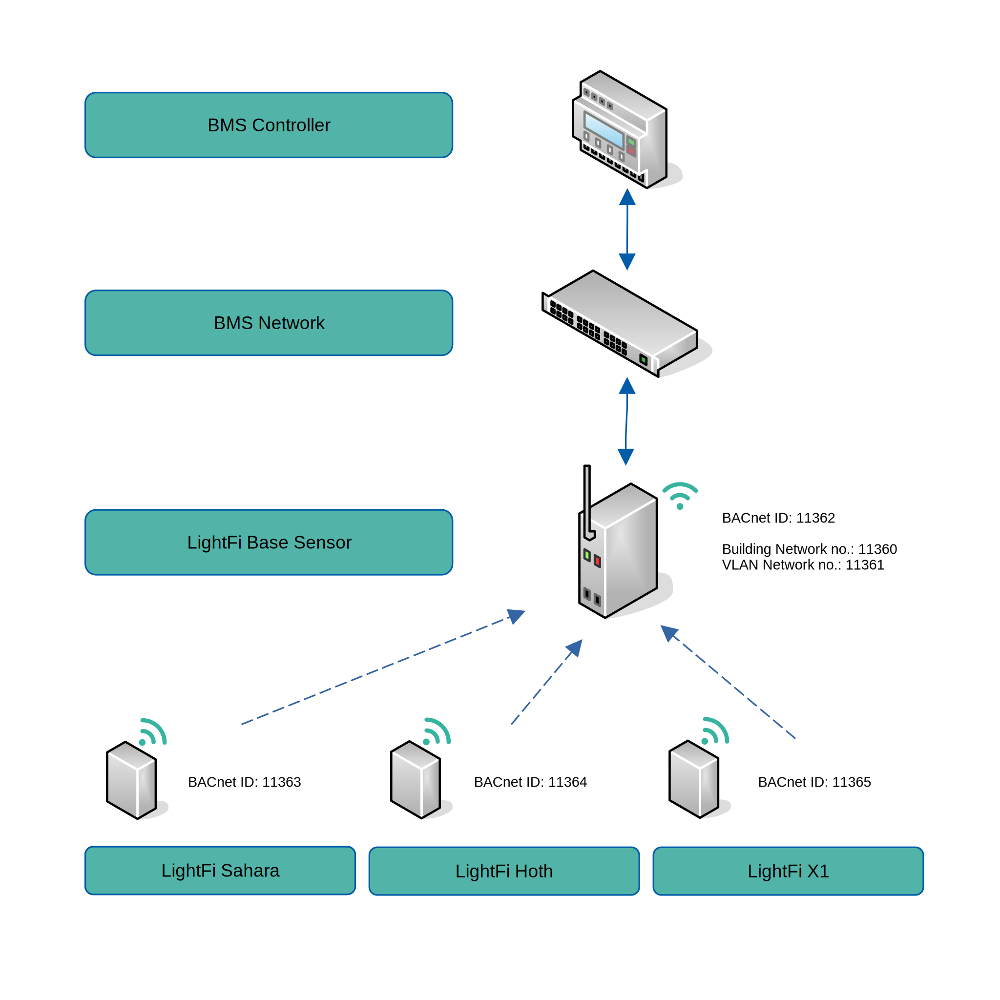
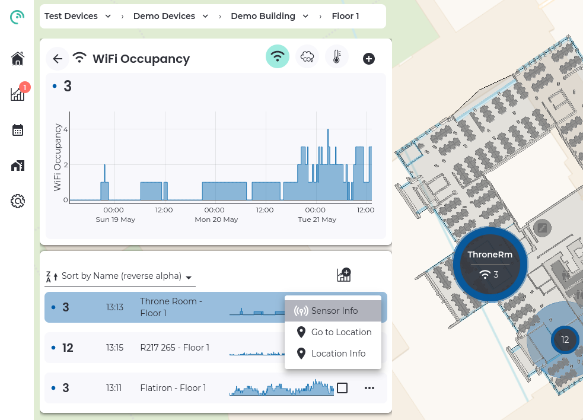
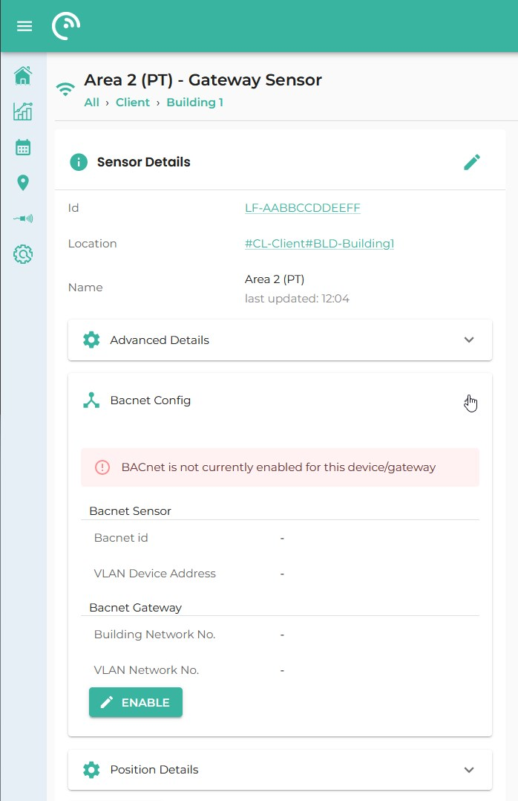
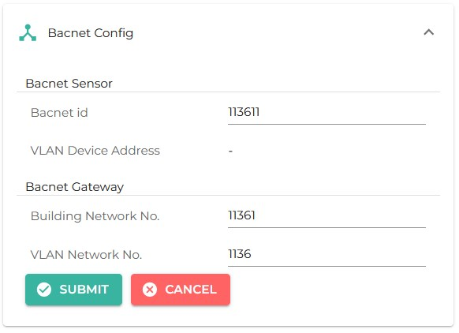
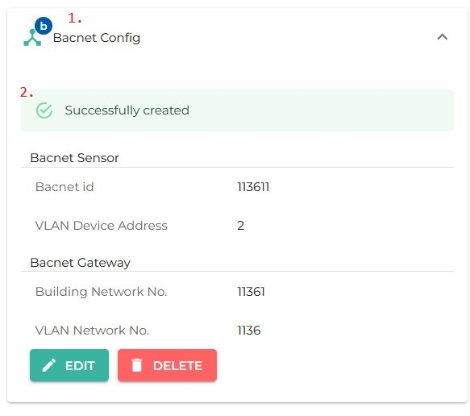
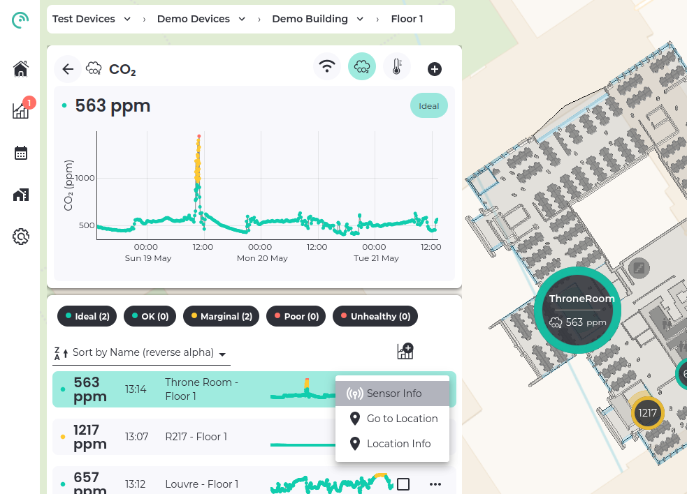
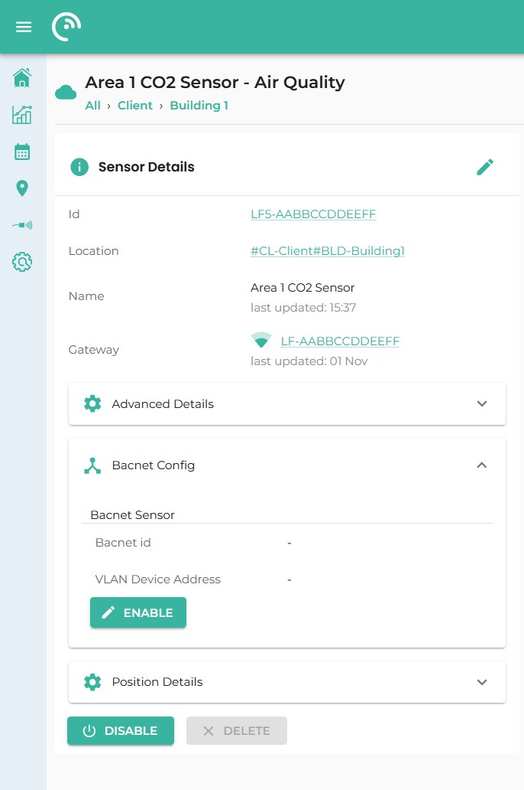
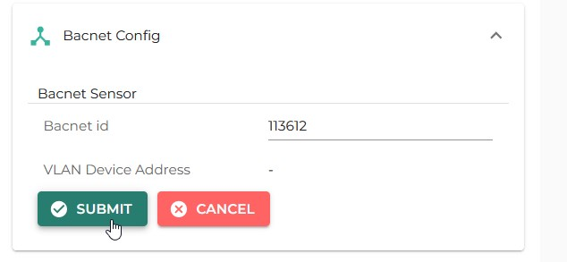
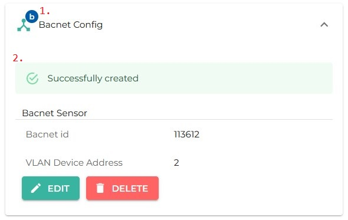
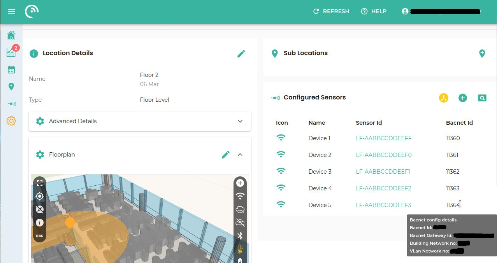

BACnet
LightFi sensors can be used to monitor multiple types of physical spaces (such as offices, airports, universities, ...).
These sensors are able to measure different types of data and report this data directly to the building management system (BMS):
- Base - Broad Level Occupancy Sensor.
- Hoth - Temperature and Humidity;
- Sahara - CO₂ and Particulate Matter;
- Alpine - CO₂, Temperature and Relative Humidity;
- X1 - Presence;
The Base sensor includes wireless technology capabilities that allow it to act as a gateway for receiving data from the other sensors and send it to the LightFi cloud platform for data visualisation. The Base sensor also acts as a gateway for the BACnet/IP implementation, enabling the Base to create BACnet representations of the actual wireless sensors.
The sensor data from all sensors can then be used by the BMS to monitor and directly control the building, for example using occupancy to alter the ventilation dynamically according to the building usage, keeping the air quality high and the energy use low.

LightFi BACnet Sensors
LightFi Base
The LightFi "Base" sensor is a long-range, broad level occupancy sensor, which determines the percentage occupancy levels by measuring the number active devices on a floor area, with coverage of 250 - 500+ m².
| Object Type | Object ID | Object Name | Present Value |
|---|---|---|---|
| Device | (1) | LightFi_LF-AABBCCDDEEFF | N/A |
| Analog Input | AI1 | WiFi Occupancy Raw (number) | Current value / Default = 0 |
| Analog Input | AI2 | WiFi Occupancy Percentage | (AI 1) / (AV 1) * 100 |
| Analog Value | AV1 | WiFi Occupancy Maxium Setpoint | Default = 100 |
Notes:
-
Object ID can be configured via LightFi Portal;
-
The Object Name field will depend on the device’s MAC Address. This value should start with "LightFi_LF-".
-
The PICS document for this sensor can be found here: LightFi Base
LightFi Sahara
The Sahara sensor measures: Carbon Dioxide (CO₂) levels with a dual-channel NDIR sensor and Particulate Matter (PM2.5).
| Object Type | Object ID | Object Name | Present Value |
|---|---|---|---|
| Device | (1) | LightFi_LF5-AABBCCDDEEFF (2) | N/A |
| Analog Input | AI1 | Carbon Dioxide level (ppm) | Current Reading / -999 if not initialised |
| Analog Input | AI2 | Particulate Matter PM2.5 | Current Reading / -999 if not initialised |
| Analog Input | AI3 | RSSI | Current Reading / -999 if not initialised |
Possible valid values for Present Value :
| Object ID | Object Name | Minimum | Maximum |
|---|---|---|---|
| AI1 | Carbon Dioxide level (ppm) | 400 | 5000 |
| AI2 | Particulate Matter PM2.5 | 0 | 500 |
| AI3 | RSSI | -999 | -1 |
Notes:
-
Object ID can be configured via LightFi Portal;
-
The Object Name field will depend on the device’s MAC Address. This value should start with "LightFi_LF5-".
-
The PICS document for this sensor can be found here: LightFi Sahara
LightFi Alpine
The Alpine sensor measures: Carbon Dioxide (CO₂) levels with a dual-channel NDIR sensor, Temperature and Relative Humidity.
| Object Type | Object ID | Object Name | Present Value |
|---|---|---|---|
| Device | (1) | LightFi_AQ2-AABBCCDDEEFF (2) | N/A |
| Analog Input | AI1 | Carbon Dioxide level (ppm) | Current Reading / -999 if not initialised |
| Analog Input | AI2 | Temperature value (Celsius) | Current Reading / -999 if not initialised |
| Analog Input | AI3 | Relative Humidity value (Percentage) | Current Reading / -999 if not initialised |
| Analog Input | AI4 | Battery Level Value (Percentage) | Current Reading / -999 if not initialised |
| Analog Input | AI5 | RSSI | Current Reading / -999 if not initialised |
Possible valid values for Present Value :
| Object ID | Object Name | Minimum | Maximum |
|---|---|---|---|
| AI1 | Carbon Dioxide level (ppm) | 0 | 5000 |
| AI2 | Temperature value (Celsius) | 0 | 65 |
| AI3 | Relative Humidity value (Percentage) | 10 | 90 |
| AI4 | Battery Level Value (Percentage) | 0 | 100 |
| AI5 | RSSI | -100 | -1 |
Notes:
-
Object ID can be configured via LightFi Portal;
-
The Object Name field will depend on the device’s MAC Address. This value should start with "LightFi_AQ2-".
-
The PICS document for this sensor can be found here: LightFi Alpine.
LightFi Hoth
The Hoth sensor measures temperature, relative humidity and its own battery level.
| Object Type | Object ID | Object Name | Present Value |
|---|---|---|---|
| Device | (1) | LightFi_MS1-AABBCCDDEEFF (2) | N/A |
| Analog Input | AI1 | Temperature value (Celsius) | Current Reading / -999 if not initialised |
| Analog Input | AI2 | Relative Humidity value (Percentage) | Current Reading / -999 if not initialised |
| Analog Input | AI3 | RSSI | Current Reading / -999 if not initialised |
| Analog Input | AI4 | Battery Level Value (Percentage) | Current Reading / -999 if not initialised |
Possible valid values for Present Value :
| Object ID | Object Name | Minimum | Maximum |
|---|---|---|---|
| AI1 | Temperature value (Celsius) | -40 | 70 |
| AI2 | Relative Humidity value (Percentage) | 0 | 100 |
| AI3 | RSSI | -100 | -1 |
| AI4 | Battery Level Value (Percentage) | 0 | 100 |
Notes:
-
Object ID can be configured via LightFi Portal;
-
The Object Name field will depend on the device’s MAC Address. This value should start with "LightFi_MS1-".
-
The PICS document for this sensor can be found here: LightFi Hoth
LightFi X1
The X1 is a battery powered Passive Infrared (PIR) motion sensor, designed to detect binary desk or room occupancy.
| Object Type | Object ID | Object Name | Present Value |
|---|---|---|---|
| Device | (1) | LightFi_AMP-AABBCCDDEEFF (2) | N/A |
| Analog Input | AI1 | Motion Sensor (Presence) | Current Reading / -999 if not initialised |
| Analog Input | AI3 | RSSI | Current Reading / -999 if not initialised |
| Analog Input | AI4 | Battery Level Value (Percentage) | Current Reading / -999 if not initialised |
Possible valid values for Present Value :
| Object ID | Object Name | Minimum | Maximum |
|---|---|---|---|
| AI1 | Motion Sensor (Presence) | 0 | 1 |
| AI2 | RSSI | -100 | -1 |
| AI4 | Battery Level Value (Percentage) | 0 | 100 |
Notes:
-
Object ID can be configured via LightFi Portal;
-
The Object Name field will depend on the device’s MAC Address. This value should start with "LightFi_AMP-".
-
The PICS document for this sensor can be found here: LightFi X1
-
The Motion Sensor Present Value will change on PIR sensor trigger - value will be set to
1- and it will change back to0if no motion is detected after 5 to 15 seconds.
Enabling Sensors in BACnet Network
Base Sensor
Activation of the Base Sensor can be made through the LightFi Portal by accessing "BACnet Config" in the desired base sensor configuration page and pressing the "Enable" button.
When activating the Base Sensor in our platform, the following fields are able to be configured:
- Building Network Number - The network number of the existing building BACnet/IP network the sensor will be connected to e.g. 2000 (For BACnet/IP this number may not affect your implementation, if you do not know the number it may be possible to use a default like 2000);
- VLAN Network Number - This is the BACnet network number of the BACnet network internal to the router within the BASE sensor, this should not clash with any other existing BACnet network numbers. A good number to use for this is something related to the BACnet ID of the BASE sensor (you can even use the same number), so that it is easy to identify which networks relate to which BASE.
- BACnet ID of the device - A unique ID for the sensor according to your BACnet/IP configuration.
After entering these fields, the device will take around 2 minutes to apply the changes and create the BACnet gateway.
Example of Base Sensor BACnet configuration
- Using the LightFi Portal dashboard, select a sensor and go to the sensor configuration page. You can do this either by using the config page to navigate to the location for the sensor and selecting it or by selecting "Sensor Info" from the sensor menu on the dashboard data list (as below): 
- On the Sensor Configuration page, click on "BACnet Config" section and then press "Enable": 
- Press on the "Enable" button, fill the fields and then press "Submit": 
- When you press submit, a small blue circle will indicate the sensor is BACnet enabled (
1.) and a Success/confirmation message (2.) will appear. 
Wireless Sensors
All the other available wireless sensors can be activated in the same way, by accessing "BACnet Config" in the desired wireless sensor configuration page and pressing the "Enable" button.
This will make a text field appear for entering its BACnet ID. Note that if a BACnet ID is not entered, our system will pick one and present it in the configuration page.
Unlike the Base sensor, these changes will apply immediately and the sensors should be available on the BACnet/IP Network within a few seconds.
Example of Wireless Sensors BACnet configuration
A wireless sensor can only be BACnet enabled if it was previously registered on the portal (See here).
- Using the LightFi Portal dashboard, select a sensor and go to the sensor configuration page. You can do this either by using the config page to navigate to the location for the sensor and selecting it or by selecting "Sensor Info" from the sensor menu on the dashboard data list (as below): 
- On the Sensor Configuration page, click on "BACnet Config" section and then press "Enable": 
- Fill the fields and then press "Submit": 
- When you press submit, a small blue circle will indicate the sensor is BACnet enabled (
1.) and a Success/confirmation message (2.) will appear. 
View all BACnet Sensors in a Location
BACnet network details for all LightFi sensors in a particular location can be viewed on the Location Configuration Page.
After selecting the desired Location ("Sub Location" section), press the "Show BACnet Enabled Sensors" button on the "Configured Sensors" section (see image).
For detailed BACnet information on a specific device, hover the mouse on the desired BACnet ID item and a tooltip will appear.
